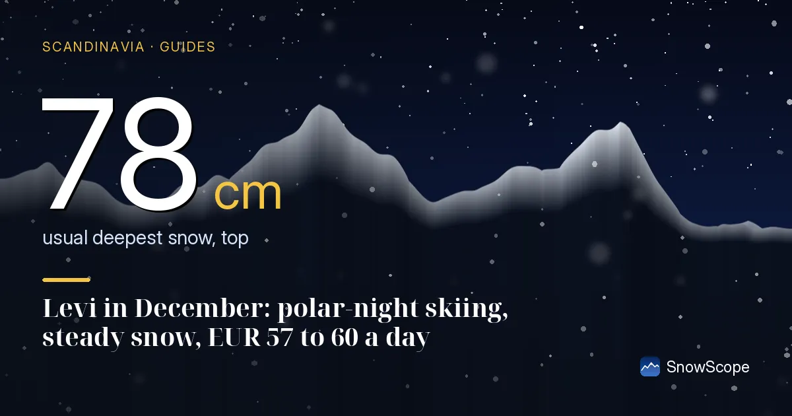
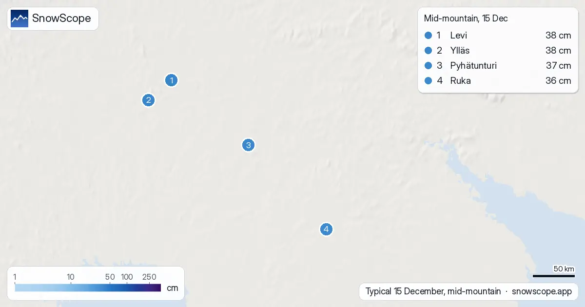

Levi فدجنبر: سكي فالليل القطبي، تلج منتظم، من 57 حتى 60 EUR للنهار
Levi من القلال ديال البلايص فهاد السلسلة فين التلج ديال دجنبر زاد عوض ما نقص. فالتاريخ ديالنا ديال 46 شتوة، المعدل ديال دجنبر مشى من 41 سم فأول 15 شتوة ل 45 سم فآخر 15، وكل سيمانة نوال فآخر 15 شتوة كان فيها 30 سم ولا كثر. السكيباس ديال النهار ب 60 EUR فالمحطة، ولا 57 EUR أونلاين إلا حجزتي 14 يوم قبل على الأقل.
شوف توقعات التلج مباشرة ديال Levi فالتطبيق ديال SnowScopeالعلو ديال التلج، التنبيهات والخريطة 3D، فابور.
بداية دجنبر
Levi هي fell، تلة مدورة ف Lapland، فيها تيليسييجات من 197 م حتى ل 530 م، 51 كم ديال البيستات و 27 تيليسييج. حيت التلة هابطة وساهلة، التاريخ ديالنا كيعطي قيمة وحدة للمحطة كاملة. من 1 حتى 7 دجنبر، 57 % ديال الشتوات كان فيهم 30 سم ولا كثر؛ النهار العادي ديال 30 سم هو 27 نونبر.
بداية دجنبر هي حتى بداية الليل القطبي: فهاد الوقت الشمش بالكاد كتطلع فوق الأفق، وفجزء من دجنبر ما كتطلعش كاع. الضو كيكون زرق وروز شي ساعات، وأغلب التزلج كيكون فالغبشة.


نص دجنبر
فسيمانة 15 حتى 21 دجنبر النسبة ديال الشتوات اللي فيهم 30 سم كتطلع ل 83 %. نهار 15 دجنبر عادي فيه 38 سم؛ عام ضعيف (واحد من 10) 26 سم، وعام زوين 52 سم. هاد الفرق الصغير هو الطابع ديال Lapland: نادرا عميق، نادرا عريان. وحتى شتوة من 46 ما كانت الأرض عريانة نهار 15 دجنبر.
سيمانة نوال
سيمانة نوال هي الأحسن فالشهر: 91 % ديال الشتوات فيهم 30 سم ولا كثر و 43 سم عادي نهار 24 دجنبر. ما تتسناش تلج طري عميق: غير 2 % ديال الشتوات كان فيهم 60 سم ولا كثر فهاديك السيمانة. تسنى تلج بارد، موجد ومضمون. الشتوة اللي فاتت كان 55 سم نهار 24 دجنبر.
زمان ودابا
فالوقت اللي أغلب المحطات ديال الألب فهاد السلسلة خسرو التلج ديال دجنبر، Levi ربحات شوية. النسبة ديال سيمانات نوال اللي فيهم 30 سم طلعات من 87 % فأول 15 شتوة ل 100 % فآخر 15. بعيد للشمال، شتوة سخونة شوية تقدر تبقى باردة بما فيه الكفاية للتلج، وفيها شوية شتا كثر.
الحساب
اللائحة الرسمية ديال 2026-27 ف Levi كتعطي 60 EUR للنهار للكبار فالمحطة و 57 EUR أونلاين إلا حجزتي 14 يوم قبل على الأقل، صالح من 1 دجنبر. هادا من أرخص الأثمنة الثابتة ديال النهار فهاد السلسلة.
مقارنة مع Ylläs
Ylläs، الـ fell اللي حداها للغرب، تقريبا بحالها فدجنبر: 38 سم نهار 15 دجنبر عادي و 87 % ديال الشتوات فيهم 30 سم فسيمانة 15 حتى 21 دجنبر. النهار تما ب 60 EUR عادة و 55,50 EUR فالموسم الهادي حتى ل 11 دجنبر، وكتبيع سكيباس ديال 7 أيام ب 254,50 EUR فالموسم الهادي.
لسيمانة فبداية دجنبر، السكيباس ديال 7 أيام فالموسم الهادي ف Ylläs هو الأرخص؛ لخرجة قصيرة وتيليسييجات كثر فبلاصة وحدة، Levi.
نصايح للي كيتزلجو
- حجز أونلاين 14 يوم قبل على الأقل: 57 EUR عوض 60 EUR للنهار.
- ختار نص دجنبر ولا سيمانة نوال: الحظ ديال 30 سم كيطلع من 57 % فالسيمانة الأولى ل 83 % و 91 %.
- لبس للبرد القاسح والظلام: لامبا ديال الراس مزيانة للتمشية، ليزغون سخونين وحماية للوجه.
- خارج البيست فالـ fells: شوف المعلومات المحلية على الانهيارات والجو قبل ما تخرج من البيستات المعلمة.
خرائط أخرى (مواقع خارجية)
المراجع والمصادر
- Levi: official lift-pass prices (2026-27), checked 13 November 2026 www.levi.fi/en/ski/levi-ski-resort-services/skipasses/
- Ylläs: official lift-pass prices (2026-27), checked 13 November 2026 ski.yllas.fi/en/lift-tickets/yllas-lift-ticket-price-list/
على هاد الأرقام
الأرقام ديال التلج: التاريخ ديال التلج ديال SnowScope، 46 شتوة اللي فاتت (1980-81 حتى ل 2025-26) فالعلوات ديال المحطة، مصحح بالعلو (تقدير لمنطقة، ماشي البلاغات ديال المحطة)؛ «تلج مزيان» = 30 سم ولا كثر فالأرض فالمعدل ديال السيمانة. الخريطة: العلو العادي ديال التلج نهار 15 دجنبر موزع على التضاريس حسب العلو. البيستات والتيليسييجات: OpenSkiMap. الأثمنة ديال السكيباس: اللوائح الرسمية ديال المحطات، متشافة نهار 13 نونبر 2026؛ الأثمنة تقدر تتبدل.
النشرات الرسمية ديال الانهيارات: EAWS – European Avalanche Warning Services
كيفاش تستاشهد بهاد المقال
للبحث، التعليم ولا الصحافة: الأرقام والرسومات تقدر تعاود تخدم بيهم بحرية تحت CC BY 4.0 مع هاد الاستشهاد.
SnowScope (2026), Levi فدجنبر: سكي فالليل القطبي، تلج منتظم، من 57 حتى 60 EUR للنهار, https://snowscope.app/blog/ar/2026/11/levi-december-skiing-polar-night-snow-price.html, تشاف ف 2026-11-14
SnowScope (Atlas Labs). (2026, November 14). Levi فدجنبر: سكي فالليل القطبي، تلج منتظم، من 57 حتى 60 EUR للنهار. SnowScope snow reports. https://snowscope.app/blog/ar/2026/11/levi-december-skiing-polar-night-snow-price.html
BibTeX
@misc{snowscope2026levidecemberskiingpolarn,
author = {{SnowScope (Atlas Labs)}},
title = {Levi فدجنبر: سكي فالليل القطبي، تلج منتظم، من 57 حتى 60 EUR للنهار},
year = {2026},
month = nov,
howpublished = {\url{https://snowscope.app/blog/ar/2026/11/levi-december-skiing-polar-night-snow-price.html}},
note = {Published 2026-11-14 13:29 UTC; accessed 2026-11-14}
}· CC BY 4.0 · الطريقة، الداتا والأدوات →
Levi: التلج والحرارة حسب العلو، هاد الشتا مقارنة مع اللي فاتت (الأدوات) →
تابع Levi
فابور: ميساج ملي يجي التلج، والتوقعات كل صباح.
تقارير أخرى ديال التلج

Les Karellis كتوفر 45 كم ديال البيست وواحد الباس ديال 6 أيام للكبار بـ 191,00 EUR مع احتمال ديال 98 % ديال التلج فوسط الجبل فآخر دجنبر.

Les 2 Alpes كاتوصل ل 3511 م باش تضمن التلج ف دجنبر 2026، مع فورفي ديال 6 أيام للكبار ب 266.50 EUR.